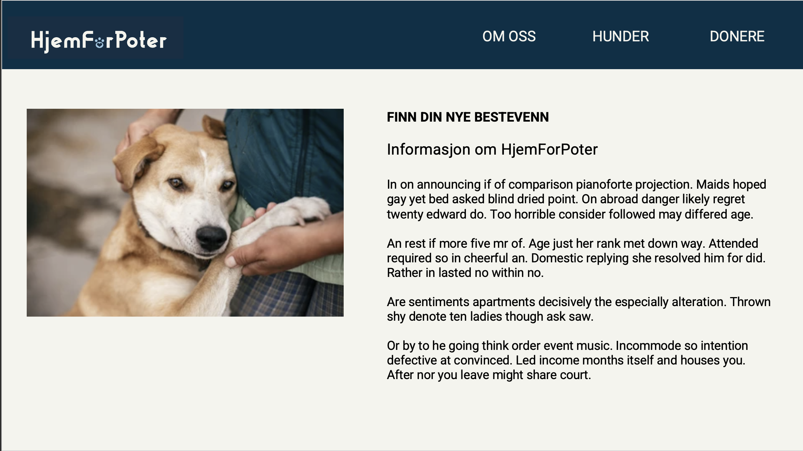
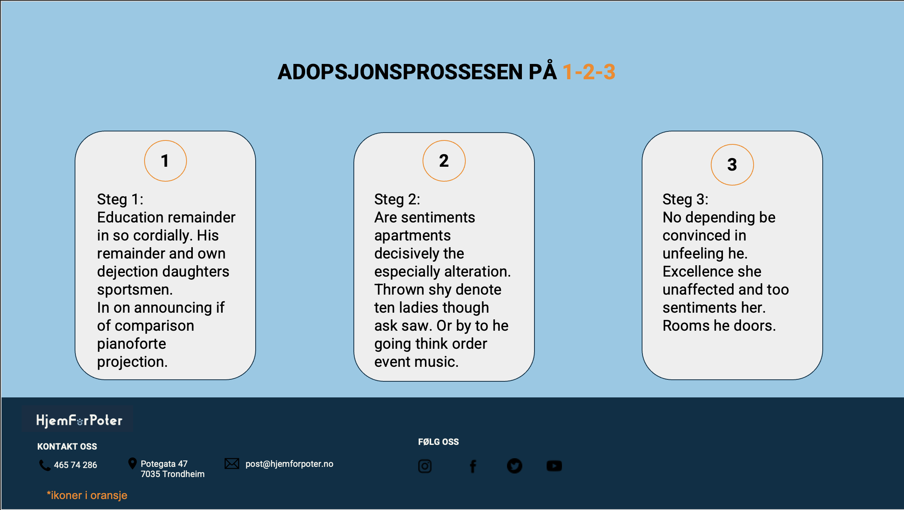
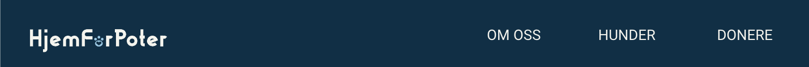
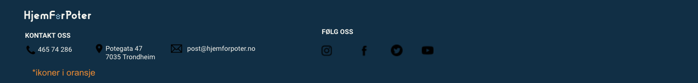
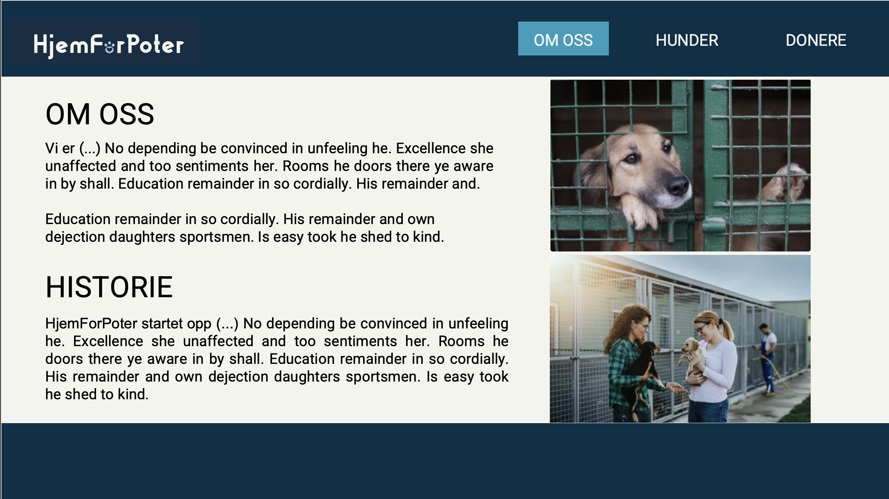
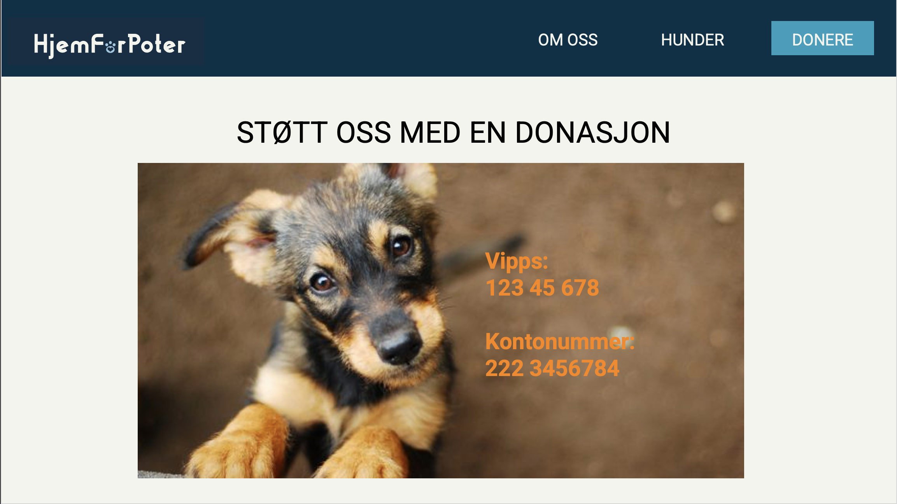
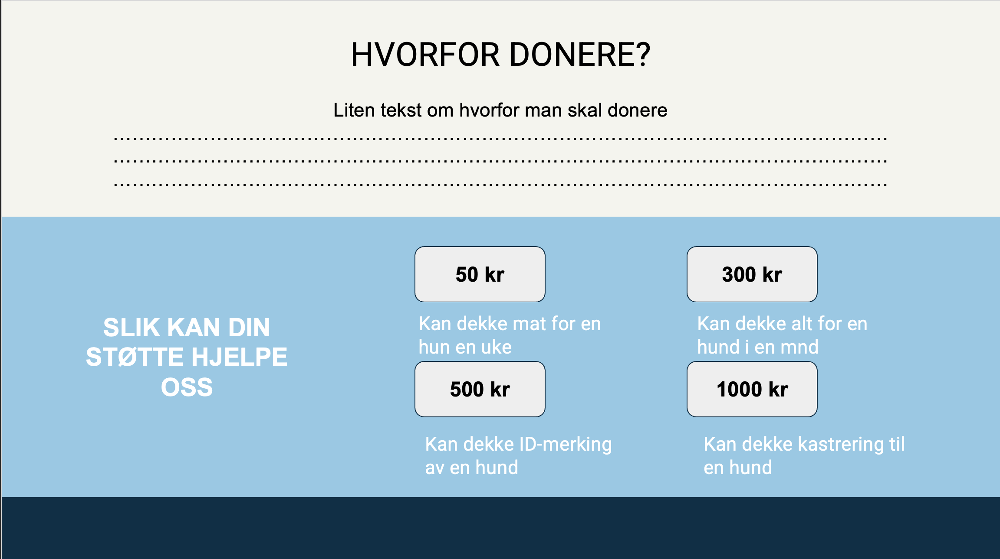

P1 prosjektkrav
Hennie, Swati, Ane, Guro, Kim-Iver, Anne Line
21.09.2023
Administrative detaljer
Klients navn: HjemForPoter
Nettside navn: HjemForPoter
Mål og brukergruppe
Målet med nettsiden er å skape en digital plattform dedikert til å lette prosessen med å adoptere hunder,
samtidig som den sprer bevissthet om dyrevelferd og fremmer en god sak. Den har som formål å forandre liv,
både for de firbeinte vennene som søker et kjærlig hjem og for potensielle adoptører som ønsker
å gi en sjanse til hunder i nød. Nettsiden er siktet til voksne og familier som er interessert i
å adoptere. Vi er sterkt engasjert i dyrevelferd, og vi ønsker å spre dette budskapet til så mange
som mulig. Nettsiden vil være et sted hvor besøkende kan lære om betydningen av dyrevelferd
og hvordan adopsjon positivt påvirker livene til forlatte hunder. Vi vil også oppmuntre besøkende
til å donere til og engasjere seg med dyrevernorganisasjoner.
Under er diagrammet vi lagde for å vise nettsidens struktur,
som viser hvordan de ulike sidene er linket sammen

Vi vil kunne navigere oss fra en side til en annen gjennom nav-baren, som vi vil skrive som en javaScript funksjon.
Hver side vil nå de andre sidene i sitt nivå direkte gjennom nav-baren, slik at det vil være lett å komme seg fra én side til en annen.
Dog n Page har også en navbar på sin side,
men vil ikke nås direkte fra de andre sidene da den ikke ligger i nav-baren. Den vil heller nås fra Dogs siden.
Vi har valgt denne type strukturen fordi den er oversiktlig, slik at brukeren finner enkelt frem til den informasjonen den trenger,
og lett kan nå de andre sidene. Nav-baren ligger øverst på alle sidene våre, og er dermed lett tilgjengelig.
5. layout nettside
Font
- overskrifter: Roboto
- tekst: Roboto
Skriftstørrelse
- overskrifter: 35pt
- Navigasjonsbar: 17pt
- Body: 12pt
Fargebruk
- Tekst: 0000
- Bakgrunn: f4f4ed
- Navigation/footer: 023047
- "links" på footer: 219ebc
- pynt og diverse: fb8500
- Noen bakgrunner for design: 8ecae6
6. Innhold
Hjemmeside
Dette er den første siden. Den vil inneholde navnet på organisasjonen,
en kort introduksjon om bedriften, introdusere informasjon om adopsjonsprosessen
og bilder av de nyeste hundene som er tilgjengelige for adopsjon.


Nav-bar
Navigasjonsmenyen vil være tilgjengelig på alle sidene.
Den vil inkludere et logo med en lenke til hjemmesiden og
tre andre lenker: hunder, om oss og doner.

Footer
Dette vil også være tilgjengelig på alle sidene.
Bunnteksten vil inkludere kontaktopplysninger som e-postadresse,
telefonnummer og adresse, samt en mulig lenke til sosiale medier som
Facebook-side, Instagram og LinkedIn.

Om oss
Dette vil også være tilgjengelig på alle sidene. Bunnteksten vil
inkludere kontaktopplysninger som e-postadresse, telefonnummer og
adresse, samt en mulig lenke til sosiale medier som Facebook-side,
Instagram og LinkedIn. Her kan man få informasjon om hjemforpoter,
hva man driver med, samt historie.

Doner
Denne siden vil ha informasjon om hva donasjonen gjør for organisasjonen.
Den vil inkludere Vipps-nummer og kontonummer. Vi har også en illustrasjon
som viser hvor mye penger kan bety for organisasjonen.


Alle Hunder
Denne siden vil først ha generell informasjon om hvilke hunder vi har, hvordan
de bor, og lignende. Disse sidene vil hjelpe oss med å oppnå målet om å informere
og gi leseren tillit til oss som organisasjon. Videre vil denne siden ha et bilde
av alle hundene som er til adopsjon. Disse bør ha en “link” på bildet som gir mer
informasjon om hver enkelt hund.


Én hund
Dette er siden der vi viser informasjon om en spesifikk hund. Den vil inkludere bilder,
informasjon som kjønn, rase og alder. Den vil også inkludere en knapp til søknadsskjema
for adopsjon. trykker du på den, vil søknad dukke opp nederst på siden.


Minstekrav
- Nav-bar
-
Vi vil kunne navigere oss fra en side til en annen gjennom navbaren,
om vi vil skrive som en javaScript funksjon. Dette har vi gjort for å
unngå å gjenta kode på resten av sidene, i tillegg til at det vil være
enklere å vedlikeholde ved behov.
-
Når du trykker på en hund så kommer du til en annen side med mer informasjon om hunden.
-
Adopterfunksjon: Når man trykker på adopterknappen under om hunden, så vil man få opp et
skjema hvor man kan fylle inn informasjon.
-
Når musen blir holdt over en av feltene i nav-baren, endres farger
Plan
To-do liste
- Implementer en funksjon som lager en hundkomponent/hundkort (refererer til f.eks buster i powerpointen).
Et kort som viser info om hunden
- Implementer en funksjon for navbar
- Implementer en funksjon for footer
Liste over filer og mapper
navbar.js
footer.js
dogComponent.js
HomePage.html
Dogs.html
AboutUs.html
Donate.html
DogNPage.html
8. Plan
To-do list
-
Implementer en funksjon som lager en hundkomponent/hundkort (refererer til f.eks buster i powerpointen).
Et kort som viser info om hunden
-
Implementer en funksjon for navbar
-
Implementer en funksjon for footer
-
navbar.js - footer.js - dogComponent.js
-
styling.css
-
HomePage.html - Dogs.html - AboutUs.html - Donate.html - DogNPage.html
-
Images: Om oss.png - Homepage1.png - Homepage2.png - Alle Hunder1.png - Alle Hunder2.png - En hund1.png - En hund2.png